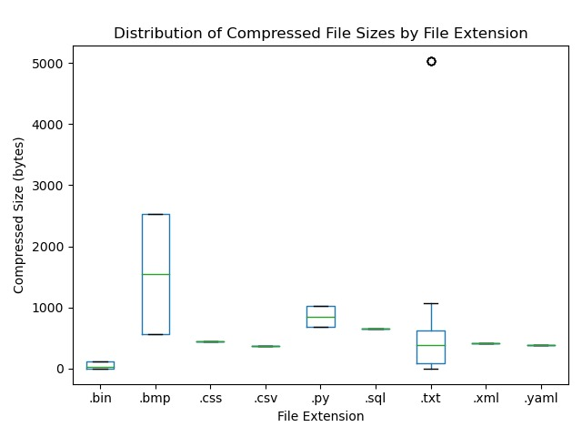
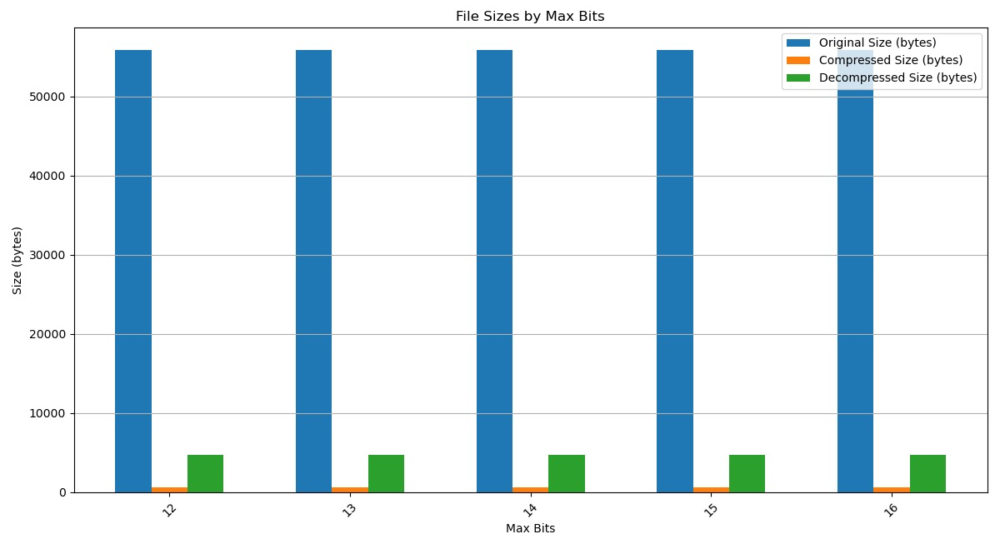
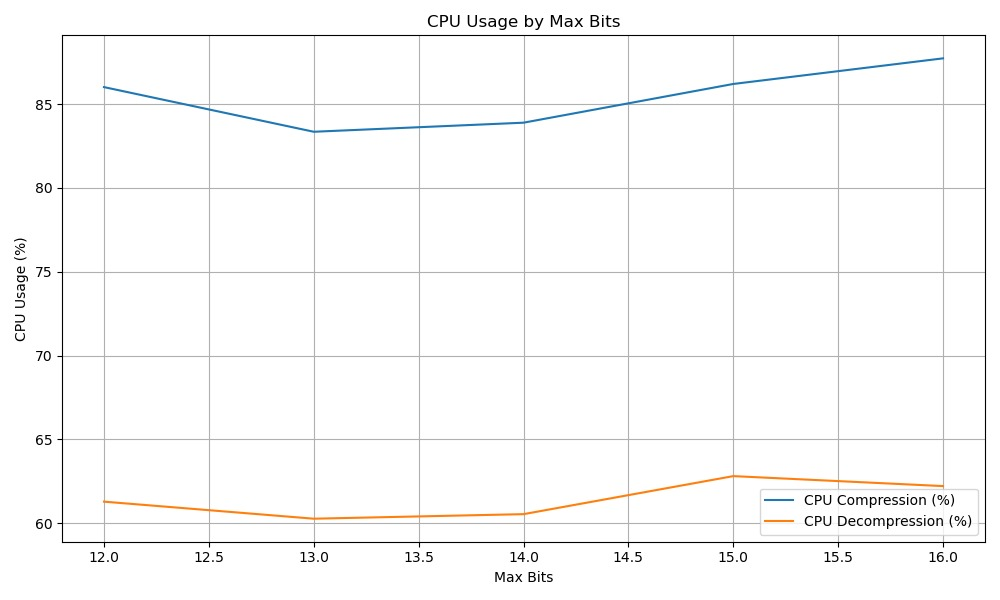
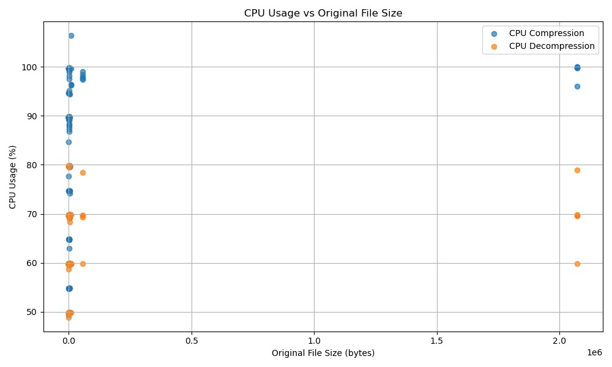

Relatório TP1 Algoritmos II - Manipulação de sequências

Introdução
O trabalho objetiva a implementação do algoritmo LZW (Lempel-Ziv-Welch) para compressão e descompressão de texto. Conhecido por sua simplicidade, o LZW é um método de compressão sem perdas, isto é, ao descomprimir um arquivo compactado, os dados originais são totalmente recuperados. Seu princípio é simples: construção e uso de um dicionário a partir da identificação de padrões recorrentes no texto, os associando à códigos mais curtos.
Objetiva-se, com essa experiência, colocar em prática conceitos teóricos acerca de manipulação de sequências, mais especificamente a utilização de árvores de prefixo. No projeto são apresentados exemplos práticos do funcionamento do algoritmo, além de uma análise dos resultados obtidos em cenários diversos.
Decisão de projeto
Dada a simplicidade dos algoritmos de compressão e descompressão, o ponto chave da implementação do LZW está na escolha da estrutura de dados utilizada para representar o dicionário. Com isso em mente, fora escolhida, para o desenvolvimento do projeto, a representação do dicionário como uma árvore trie compacta. Nesse tipo de árvore, nós armazenam substrings em vez de símbolos únicos, como na trie tradicional.
Métodos e implementações
Estrutura
O programa está estruturado da seguinte forma:
- Classes para compressão, descompressão, para a árvore trie e para a geração de relatório com base em arquivos de teste;
- pastas contendo os arquivos de teste (originais, compressos e descompressos);
- função main, no qual o aplicativo principal é inicializado e executado após leitura dos parâmetros de execução passados por linha de comando.
Descrição das implementações
Breve explicação das classes e métodos em cada arquivo Python do projeto:
- utils.py
read_file(filepath): lê o conteúdo de um arquivo e retorna como string. Se o arquivo for binário ou uma imagem BMP, é lido no modo binário; caso contrário, é lido como texto.
read_compressed_file(filepath): lê o conteúdo de um arquivo comprimido e retorna uma lista de códigos binários. O arquivo é aberto no modo binário, e os códigos são lidos como valores inteiros de 2 bytes (16 bits).
write_file(filepath, data): escreve o conteúdo fornecido no arquivo. O arquivo é aberto no modo de escrita de texto.
write_compressed_file(filepath, data): escreve o conteúdo comprimido no arquivo. Cada código é escrito como um valor de 2 bytes (16 bits), usando o formato binário. Se o código for uma string, é convertido para seu valor inteiro correspondente antes de ser gravado.
- main.py
- Classe LZWApp:
__init__(self, max_bits=12): inicialização das classes LZWEncoder e LZWDecoder com número máximo de bits passado como parâmetro (caso não tenha sido lido, o algoritmo roda com o tamanho fixo de 12 bits). Também inicializa o relatório.compress_file(self, input_path, output_path): função para comprimir um arquivo, dado seu caminho e o caminho de saída. Também reporta o tempo e a taxa de compressão.decompress_file(self, input_path, output_path): função para descomprimir um arquivo, dado seu caminho e o caminho de saída. Também reporta o tempo e a taxa de descompressão.
main: chamada de LZWApp, passando os parâmetros lidos na linha de comando.
- Classe LZWApp:
- trie.py
- Classe TrieNode: representa um nó da árvore trie, contendo um dicionário de filhos, um valor e um código.
- Classe Trie: representa a árvore trie, contendo um nó raiz.
insert(self, string, code): método para inserção de um nó na trie, dada uma string e um código. Segue a implementação clássica de árvores trie compactas.search(self, string): dada uma string, busca um nó na árvore que casa. Retorna o código do nó um None, caso não encontre. Segue a implementação clássica de árvores trie compactas.delete(self, string): dada uma string, remove da árvore o nó que guarda essa string, caso ele exista. Retorna True ou False. Segue a implementação clássica de árvores trie compactas.starts_with(self, prefix): verifica se há alguma string na árvore que começa com um determinado prefixoshow(self): imprime a árvore em ordem pré-fixada.
- lzw_encoder.py
- Classe LZWEncoder: implementa o algoritmo de compressão LZW utilizando uma Trie compacta e suporte para formato binário variável.
__init__(self, max_bits=12): inicializa a classe com o número máximo de bits (max_bits) e configura a Trie.
_initialize_dictionary(self): inicializa o dicionário com os 256 caracteres da tabela ASCII, armazenados como strings binárias de 8 bits. Define o próximo código livre como 256.
compress(self, data): realiza a compressão do texto de entrada. Converte o texto em uma lista de palavras binárias de 8 bits, tenta comprimir os dados utilizando o método auxiliar_compress_with_max_bitse ajusta dinamicamente o valor demax_bitscaso a compressão inicial não reduza o tamanho.
_compress_with_max_bits(self, binary_words): realiza a compressão utilizando o valor atual demax_bits. Reinicia o dicionário e configura o tamanho máximo baseado emmax_bits. Itera sobre as palavras binárias, combinando-as para formar sequências compactadas, armazena os códigos gerados em uma lista e adiciona novas entradas à Trie quando necessário. Retorna a lista de códigos comprimidos.
- Classe LZWEncoder: implementa o algoritmo de compressão LZW utilizando uma Trie compacta e suporte para formato binário variável.
- lzw_decoder.py
- Classe LZWDecoder: implementa a descompressão de dados codificados utilizando o algoritmo LZW com expansão dinâmica do dicionário.
__init__(self, max_bits=12): inicializa a classe com o número máximo de bits (max_bits) e um dicionário vazio para armazenar as entradas do processo de descompressão.
_initialize_dictionary(self): inicializa o dicionário com os caracteres da tabela ASCII, atribuindo a cada código (0 a 255) o caractere correspondente. Define o próximo código disponível como 256.
decompress(self, codes): realiza a descompressão a partir de uma lista de códigos. Inicia o dicionário, verifica se o primeiro código é válido e adiciona sua entrada ao resultado. Para cada código subsequente, verifica se está no dicionário, ou, caso contrário, constrói a entrada com base no código anterior. Adiciona novas sequências ao dicionário enquanto houver espaço e retorna o texto descomprimido como uma string concatenada.
- Classe LZWDecoder: implementa a descompressão de dados codificados utilizando o algoritmo LZW com expansão dinâmica do dicionário.
- code_report.py: script para gerar relatórios de compressão e descompressão a partir de arquivos de teste. Salva em um CSV as seguintes métricas: nome do arquivo, se a compressão foi bem-sucedida, tempo de compressão, taxa de compressão, se a descompressão foi bem-sucedida, tempo de descompressão e taxa de descompressão. Também verifica se o arquivo descomprimido é idêntico ao original.
file_hash(filepath): retorna o hash SHA-256 de um arquivo.
- report_manager.py:
- Classe ReportManager: gerencia a geração das métricas exibidas em tempo de execução no terminal ao compactar/descompactar um arquivo.
__init__(self): inicializa os atributos para armazenar o tempo de execução, taxas de compressão e descompressão, e tamanho do dicionário.start_timer(self): inicia o cronômetro para o cálculo do tempo de execução do processo.stop_timer(self): para o cronômetro e calcula o tempo total de execução.calculate_compression_ratio(self, original_size, compressed_size): calcula a taxa de compressão com base nos tamanhos do arquivo original e comprimido e armazena o resultado.calculate_decompression_ratio(self, compressed_size, decompressed_size): calcula a taxa de descompressão com base nos tamanhos do arquivo comprimido e descomprimido e armazena o resultado.log_report(self, process_type="compression"): exibe as estatísticas do processo, incluindo o tempo de execução e a taxa correspondente (compressão ou descompressão).
- Classe ReportManager: gerencia a geração das métricas exibidas em tempo de execução no terminal ao compactar/descompactar um arquivo.
Exemplos de funcionamento
Compressão
Para comprimir um arquivo, basta executar o comando abaixo, passando o caminho do arquivo de entrada e o caminho do arquivo de saída:
python main.py compress <input_file> <output_file> [max_bits]Exemplo de compressão de um arquivo de texto test.txt contendo o terceiro capítulo do livro O Pequeno Príncipe:
python main.py compress test.txt test_compressed.bin 12Neste exemplo, o arquivo é comprimido utilizando o algoritmo LZW de tamanho fixo (12 bits) e o arquivo resultante é guardado dentro da mesma pasta, com o nome test_compressed.bin.
-rw-rw-r-- 1 matheus matheus 3022 nov 19 08:39 test_compressed.bin
-rw-rw-r-- 1 matheus matheus 3454 nov 19 08:38 test.txtVemos que o arquivo comprimido pesa 432 bytes a menos que o original.
Descompressão
Para descomprimir um arquivo, basta executar o comando abaixo, passando o caminho do arquivo de entrada e o caminho do arquivo de saída:
python main.py decompress <input_file> <output_file> [max_bits]Exemplo de descompressão do arquivo comprimido anteriormente:
python main.py decompress test_compressed.bin test_decompressed.txt 12Neste exemplo, o arquivo é descomprimido utilizando o algoritmo LZW de tamanho fixo (12 bits) e o arquivo resultante é guardado dentro da mesma pasta, com o nome test_decompressed.txt.
-rw-rw-r-- 1 matheus matheus 3022 nov 19 08:46 test_compressed.bin
-rw-rw-r-- 1 matheus matheus 3454 nov 19 08:49 test_decompressed.txtPodemos ver que os 432 bytes comprimidos são totalmente recuperados e, portanto, o arquivo descomprimido é idêntico ao original.
Análise dos resultados
A seguir apresentamos análises com base na execução do algoritmo nos diversos arquivos de teste com variadas extensões presentes na estrutura do projeto.

Arquivos .bmp exibem a maior variabilidade no tamanho comprimido, o que reflete a baixa previsibilidade de padrões de imagem binária para compressão. Já arquivos .txt apresentam alguma variabilidade devido a diferenças na redundância de texto, enquanto extensões como .css, .csv e .yaml mantêm tamanhos comprimidos consistentes, indicando que o algoritmo de LZW é eficaz ao lidar com padrões repetitivos comuns nesses tipos de arquivos.
Fatores relacionados:
- Padrões repetitivos: o LZW é altamente eficaz em formatos textuais com redundância significativa, como .css e .csv, onde os padrões são facilmente identificados e compactados.
- Dados binários: arquivos como .bmp possuem dados menos previsíveis e frequentemente sofrem menos redução em tamanho, o que resulta em variabilidade.

Os tamanhos comprimidos são mais eficientes com valores intermediários de max bits (13 a 15), enquanto extremos como 12 e 16 apresentam leve perda de eficiência. Os tamanhos descomprimidos são idênticos aos originais, comprovando que o algoritmo preserva a integridade dos dados.
Fatores relacionados: - Equilíbrio entre precisão e complexidade: valores intermediários de max bits permitem capturar padrões suficientes sem aumentar excessivamente o custo computacional ou o tamanho do dicionário. - Dados originais complexos: arquivos mais variados em termos de redundância podem não se beneficiar de valores muito baixos ou muito altos de max bits.

Os resultados mostram que o uso de CPU para compressão aumenta com o número de bits máximos (max bits) configurados, enquanto a descompressão apresenta uma curva mais estável, com variações sutis em valores extremos.
Fatores Relacionados:
- Capacidade do dicionário: valores altos de max bits permitem ao LZW criar dicionários mais extensos, que aumentam a capacidade de representar padrões complexos, mas exigem maior esforço computacional durante a compressão.
- Eficiência da descompressão: o impacto de max bits é menor na descompressão porque o dicionário já foi pré-definido no processo de compressão, limitando o esforço adicional.

Os dados mostram que a compressão consome mais CPU do que a descompressão, atingindo picos de 100% em alguns casos. A descompressão utiliza menos CPU, mantendo-se em um intervalo de 50% a 80%. Arquivos maiores, embora demandem maior esforço para compressão, não impactam significativamente a descompressão.
Fatores relacionados:
- Construção do dicionário: o alto uso de CPU durante a compressão é atribuído à necessidade do LZW de construir um dicionário dinâmico, analisando os dados de entrada e armazenando padrões encontrados.
- Recuperação de dados: a descompressão é mais eficiente porque utiliza diretamente o dicionário pré-construído para traduzir os códigos comprimidos em dados originais, reduzindo a complexidade computacional.
Conclusão
O desenvolvimento deste projeto destacou pontos importantes a respeito da eficácia do algoritmo LZW e os desafios associados à compressão de dados.
Arquivos maiores e com maior redundância de padrões demonstraram compressão mais eficiente, com menor impacto relativo no uso de CPU. Formatos textuais, como .css, .csv e .yaml, foram os mais beneficiados, enquanto formatos binários, como .bmp, apresentaram limitações.
Foi visto que valores intermediários para o parâmetro max bits (entre 13 e 15) oferecem um bom equilíbrio entre eficiência de compressão e uso de recursos computacionais.
A compressão, embora mais intensiva em CPU, é sensível a ajustes como max bits, enquanto a descompressão se mostrou escalável e eficiente.
Além disso, o algoritmo LZW garantiu confiabilidade, preservando a integridade dos dados, conforme observado pela correspondência entre os tamanhos originais e descomprimidos.
Durante o desenvolvimento, foi possível não apenas compreender o funcionamento detalhado do LZW, mas também aprimorar habilidades em análise de desempenho, estruturação de código e como a teoria de manipulação de sequências pode ser aplicada na prática.